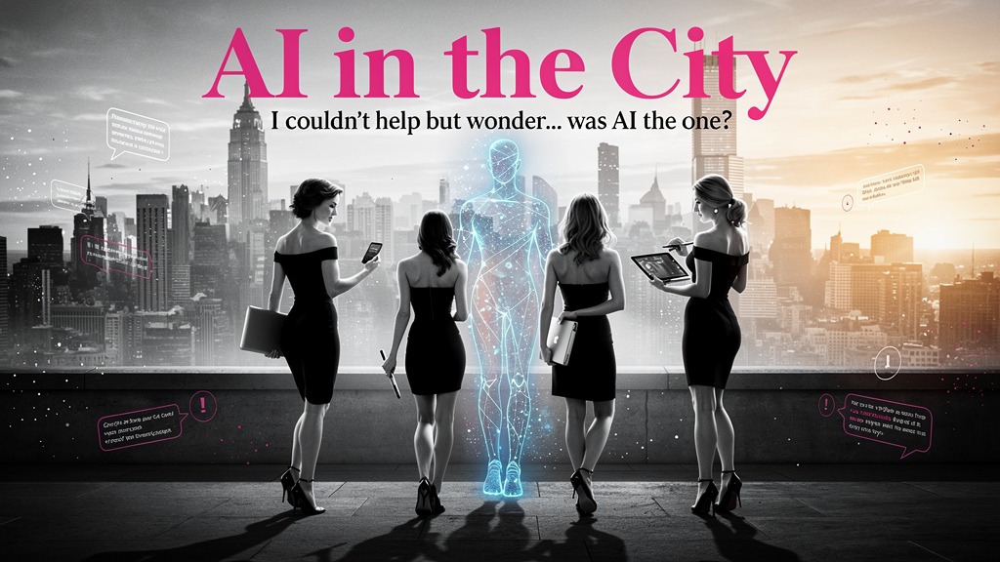

сначала это был просто интерес
потом ты начала писать ему чаще
потом заметила, что он ничего не помнит
потом решила, что так больше нельзя
и вот вы настраиваете отношения по-взрослому
Пространство для женщин, которые хотят перестать просто переписываться с AI и начать с ним настоящее взаимодействие
Здесь важно не только что делает AI, но и как мы взаимодействуем с ним.
Иногда это похоже на исследование.
Иногда — на игру.
Бывает, что на ссору.
Но чаще на хороший разговор.
Как это устроено
Колонка-вопрос → разбор кейсов → практика → маленький вывод
Сезон первый
7 серий · 12 встреч · 6 недель
Цель: Понять, как каждая участница уже использует ChatGPT и где теряет силу.
Цель: Показать, как отличать разовые чаты от долгих рабочих контуров.
Практика: Сортировка запросов, определение тем для отдельных пространств, составление личной карты AI-блоков.
Цель: Объяснить, что такое контекст, память, проекты и почему без этого AI не становится партнером.
Цель: Научить писать понятные инструкции для работы внутри проектов.
Цель: Собрать рабочую архитектуру Projects.
Цель: Научить писать простые и сильные промты без магического мышления.
Цель: Научить использовать AI как партнера по задачам и фокусу.

I couldn't help but wonder... was AI the one?
6 недель, 12 встреч, и ваши отношения с AI никогда не будут прежними